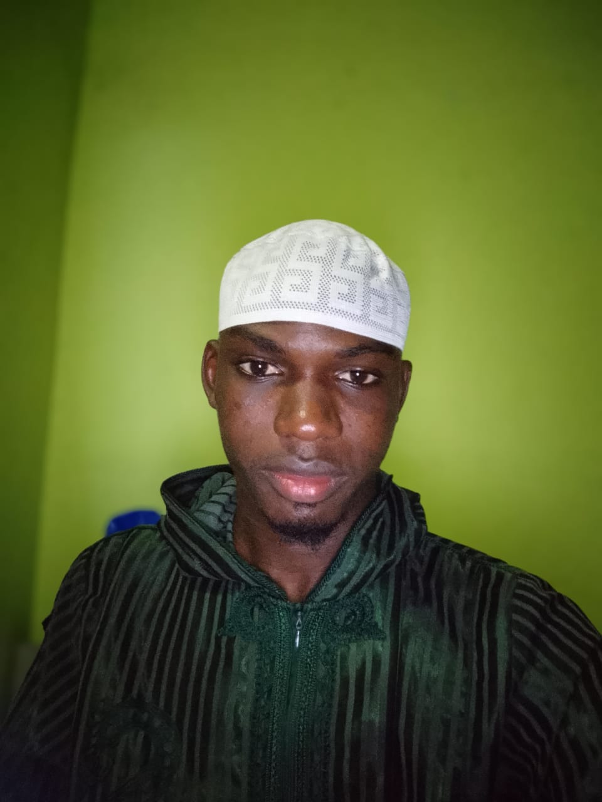

Les dix candidats retenus pour la finale 2026
L’ASAA félicite les finalistes pour leur régularité. Ils représenteront leurs communes lors de la finale du dimanche 23 août 2026.
Présentations
Les Visages du Quiz Islamique en vidéo
Les présentations des finalistes sont regroupées ici avec clarté, dignité et une identité ASAA commune.

TRAORE MOUHAMMAD ABOUBAKR
Commune : Abobo
Finaliste QI26
Inscrit après avoir découvert l’affiche du concours, il y voit l’occasion de revenir sur certaines notions et d’apprendre de nouvelles choses.
Voir l’affiche officielle Page du candidatKOUYATE AMARA
Commune : Port-Bouët
Finaliste QI26
Passionné par l’apprentissage religieux, il souhaite approfondir ses connaissances islamiques et transmettre le goût de la science utile.
Voir l’affiche officielle Page du candidatSIDIBE MOHAMED
Commune : Yopougon
Finaliste QI26
Animé par la dévotion et l’envie d’aller de l’avant, il participe pour tester ses acquis et découvrir ce qu’il ignorait encore.
Voir l’affiche officielle Page du candidat
KOKORA MOHAMED OUATTARA
Commune : Koumassi
Finaliste QI26
Pour sa première participation, il a appris à gérer son stress, gagné de nouvelles connaissances islamiques et vécu une belle expérience de compétition.
Voir l’affiche officielle Page du candidat
DOSSO MOHAMED LAMINE
Commune : Yopougon
Finaliste QI26
Passionné par les sciences islamiques, il participe pour évaluer ses connaissances et progresser dans sa compréhension de la religion.
Voir l'affiche officielle Page du candidatKOUYATE FATOUMATA RAMADAN
Commune : Adjamé
Finaliste QI26
Convaincue que « vouloir c’est pouvoir », elle participe pour tester ses acquis, augmenter son savoir et identifier ses failles.
Voir l’affiche officielle Page du candidat
DIABATE OUMAR
Commune : Adjamé
Finaliste QI26
Engagé dans les activités islamiques depuis quatre ans, il voit le Quiz comme un moyen d’évaluer ses connaissances et d’apprendre l’humilité.
Voir l’affiche officielle Page du candidatSIB ABDOULAYE
Commune : Cocody
Finaliste QI26
Étudiant et finaliste engagé, il voit le Quiz comme un cadre pour évaluer ses acquis, apprendre davantage et rester humble devant la science.
Voir l’affiche officielle Page du candidatSYLLA ABOUBAKAR SIDIK ABDOUL AZIZ
Commune : Treichville
Finaliste QI26
Pour sa première participation, il souhaite enrichir ses connaissances religieuses et continuer d’apprendre au-delà des présélections.
Voir l’affiche officielle Page du candidatSAYORE NASSIRATOU
Commune : Plateau
Finaliste QI26
Passionnée par l’étude du Coran, elle voit le Quiz comme une évaluation de son niveau réel et un moteur pour s’améliorer.
Voir l’affiche officielle Page du candidatAffiches officielles
Campagne à la découverte des finalistes
Les affiches officielles accompagnent la mobilisation autour de la finale QI26.

KOUYATE AMARA
Finaliste du Quiz Islamique 2026, Port-Bouët.

SIB ABDOULAYE
Finaliste du Quiz Islamique 2026, Cocody.

SIDIBE MOHAMED
Finaliste du Quiz Islamique 2026, Yopougon.

KOUYATE FATOUMATA RAMADAN
Finaliste du Quiz Islamique 2026, Adjamé.

SAYORE NASSIRATOU
Finaliste du Quiz Islamique 2026, Plateau.

KOKORA MOHAMED OUATTARA
Finaliste du Quiz Islamique 2026, Koumassi.

TRAORE MOUHAMMAD ABOUBAKR
Finaliste du Quiz Islamique 2026, Abobo.

SYLLA ABOUBAKAR SIDIK ABDOUL AZIZ
Finaliste du Quiz Islamique 2026, Treichville.

DIABATE OUMAR
Finaliste du Quiz Islamique 2026, Adjamé.
Répartition